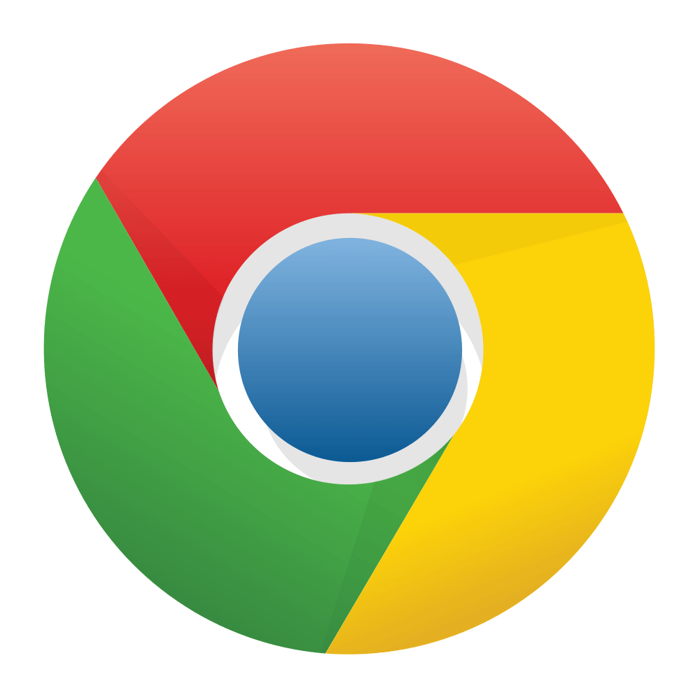

Software
Wat zijn softwares?
Software is alles wat op de computer wordt geïnstalleerd en vervolgens op het beeldscherm wordt getoond en gebruikt.
Voorbeelden van software zijn programma's als Google Chrome en Word, maar ook de apps die op een smartphone of tablet worden gebruikt.
Google Chrome

Word

Welke software gebruiken we?
In de opleiding Software Developer gebruiken we softwares om de opleiding goed te kunnen volgen en om websites te kunnen maken.
Één van de softwares die wij gebruiken is Visual Studio Code.
Visual Studio Code is een gratis en krachtige editor die wij studenten gebruiken om websites te kunnen programmeren en creeëren.
Een andere software die wij gebruiken is GitHub.
GitHub is een soort website waarmee ontwikkelaars hun code op kunnen slaan en beheren.
Visual Studio Code

GitHub